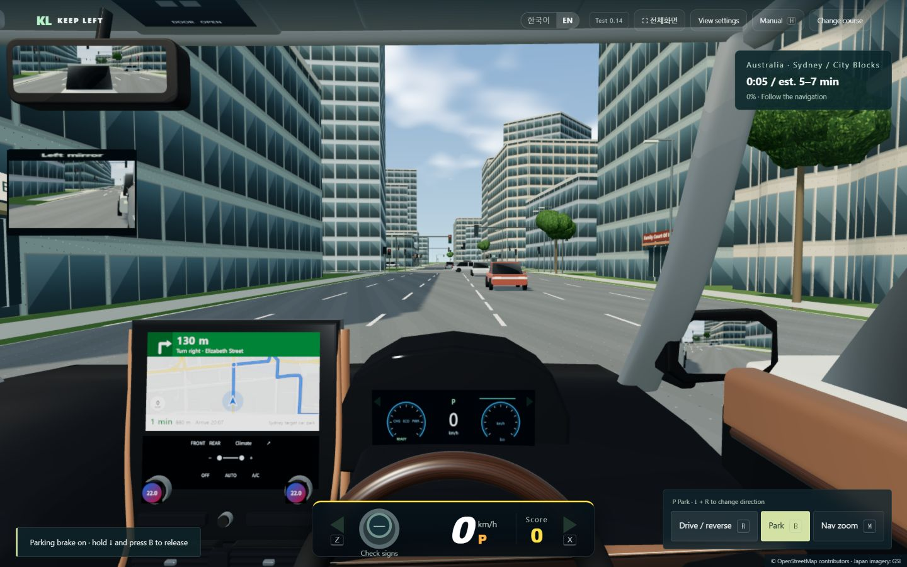

고층 업무지구

왼쪽으로 떠나는 작은 여행
낯선 길도,
왼쪽으로.
복잡한 도시부터 조용한 해안 마을까지.
한 번에 10분 이내, 새로운 길에 익숙해지는 드라이브.
IN-GAME FOOTAGE / KEEP LEFT
03개국
19개 코스
10분 이내 예상
JAPAN / AUSTRALIA / NEW ZEALAND
CHOOSE YOUR DRIVE
국경보다, 달리고 싶은 길.
국가 선택 단계 없이 코스를 고르세요. 나라와 지역, 예상 시간과 별점이 함께 보입니다.
호주 업무지구
뉴질랜드 업무지구
상업 도심
상점가·생활도로
항구 생활도로
역세권 도심
해변 마을
해안 생활도로
전통 시가지
산악 지역 마을
호숫가 산악 도시
격자형 도심
교외
도심
복합 도심
해안
구릉·산길
고속도로
THE DRIVE
출발에서 주차까지, 하나의 드라이브.
왼쪽 차로를 찾는 감각
교차로에서 좌회전하고, 대향차를 기다린 뒤 우회전하세요. 횡단보도에서는 보행자에게 양보합니다.
두 차량, 다른 시야
프리우스와 알파드의 차폭과 눈높이 차이를 느껴 보세요. 사이드미러와 후방카메라로 주차를 마무리합니다.
내 속도로, 내 난이도로
한산·보통·혼잡 중 교통량을 고르세요. 안전운전 점수를 쌓고 완료 후 잘한 점과 개선할 점을 확인합니다.
PLAY YOUR WAY
키보드로도. 터치로도.
PC는 방향키로 가속·제동·조향. 정차 중 브레이크를 누른 채 R로 전후진을 전환하고 B로 파킹을 조작하세요. 스마트폰·태블릿은 화면 버튼과 가로 전체화면을 이용할 수 있습니다.
짧은 코스, 분명한 재현 범위.
도로와 건물 윤곽은 OpenStreetMap 기반입니다. 교통·신호 주기·주차면과 건물 외관은 연습을 위해 구성했습니다. 호주·뉴질랜드 코스의 지형 높이는 평탄화했습니다. 표시 시간은 교통량과 운전 방식에 따라 달라질 수 있습니다.
일본·호주·뉴질랜드의 모든 운전 규칙을 다루는 교육 과정은 아닙니다. 실제 운전 전에는 현지 도로 규칙을 확인하세요. 최신 WebGL 지원 브라우저와 그래픽 가속이 필요합니다.
플레이 전에 궁금한 점
설치하거나 가입해야 하나요?
아니요. 브라우저에서 무료로 플레이할 수 있으며 회원가입은 필요하지 않습니다.
실제 목적지까지 몇 시간씩 운전하나요?
아니요. 실제 도로 형태에서 짧은 구간을 골랐습니다. 모든 코스의 예상 소요 시간은 10분 이내이며, 정체나 주차에 따라 실제 플레이 시간은 더 길어질 수 있습니다.
모바일에서도 할 수 있나요?
터치 조작을 지원하며 가로 화면을 권장합니다. 기기 성능에 따라 속도가 달라집니다. 일부 iPhone·iPad는 Safari에서 홈 화면에 추가한 뒤 전체화면으로 실행할 수 있습니다.